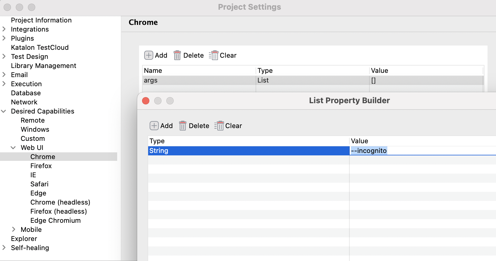
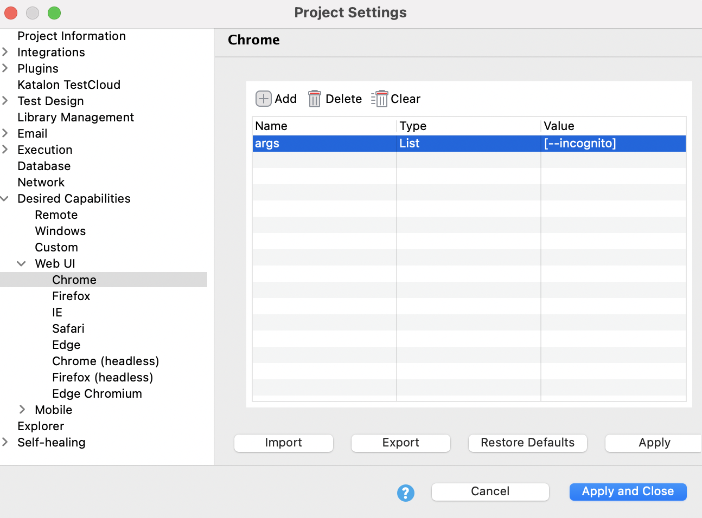

Chrome
To use Katalon Studio with the Incognito mode of Chrome, do as follows:
In Katalon Studio, go to Project > Settings > Desired Capabilities > Web UI > Chrome.
Click Add on the command toolbar, then input the following values:
Name Type Value args List --incognito 
Click Apply and Close. You can now execute tests in Incognito mode of Chrome.
- To use the Record and Spy utility of Katalon Studio in Incognito mode of Chrome, you need to allow the Katalon Studio extension to run in Incognito mode of Chrome. Do as follows:
- Open Incognito window
- Go to
chrome://extensions - Find the Katalon Studio extension, click Details
- Toggle the button Allow in Incognito